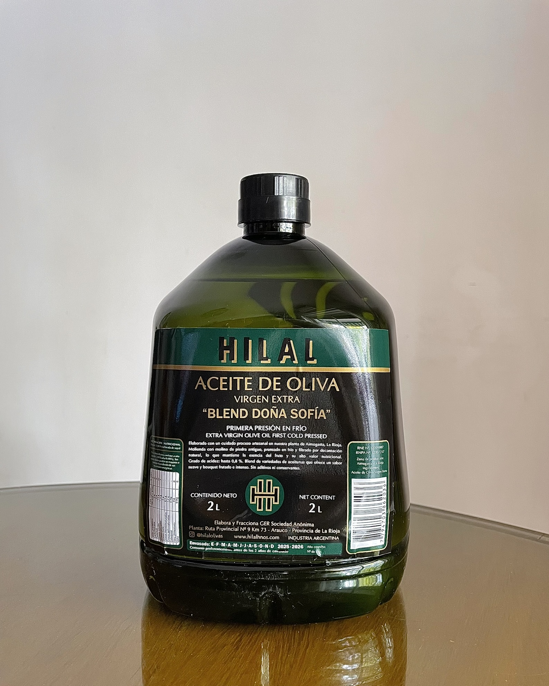
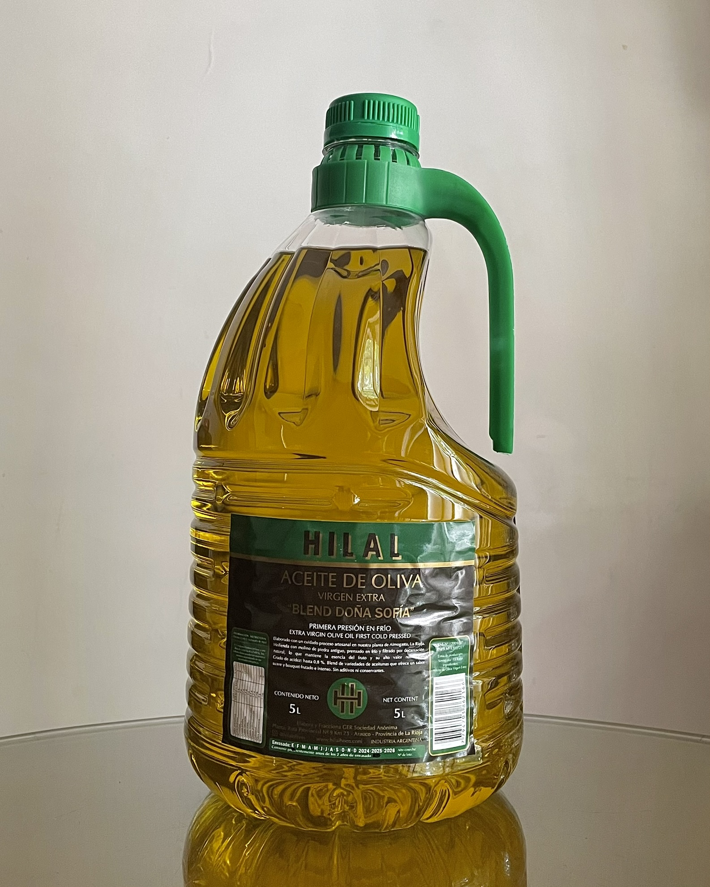

Aceite de Oliva Virgen Extra "Doña Sofia"
Con un carácter suave y un perfil de amargor y picor muy delicado
que permite que se adapte a cualquier uso culinario y paladar.
Valles de Arauco
Con un carácter suave y un perfil de amargor y picor muy delicado
que permite que se adapte a cualquier uso culinario y paladar.
Blend elaborado a partir de cuatro variedades de aceitunas: Arbequina, Arauco, Frantoio y Manzanilla. Recolectadas manualmente, permitiendo una mejor selección, sin dañarlas. Extraído en el momento óptimo, buscando mantener todas las caracteristicas propias de las olivas, destacandose por su suavidad, donde el picor y el amargor, pasan desapercibidos. En nariz, se aprecian toques de aceituna verde, almendras, nuez, complementados por una leve presencia de hierbas aromáticas.

Aceite de oliva virgen extra
Botellon 1 litro

Aceite de oliva virgen extra
Pet 2 litros

Aceite de oliva virgen extra
Pet 5 litros